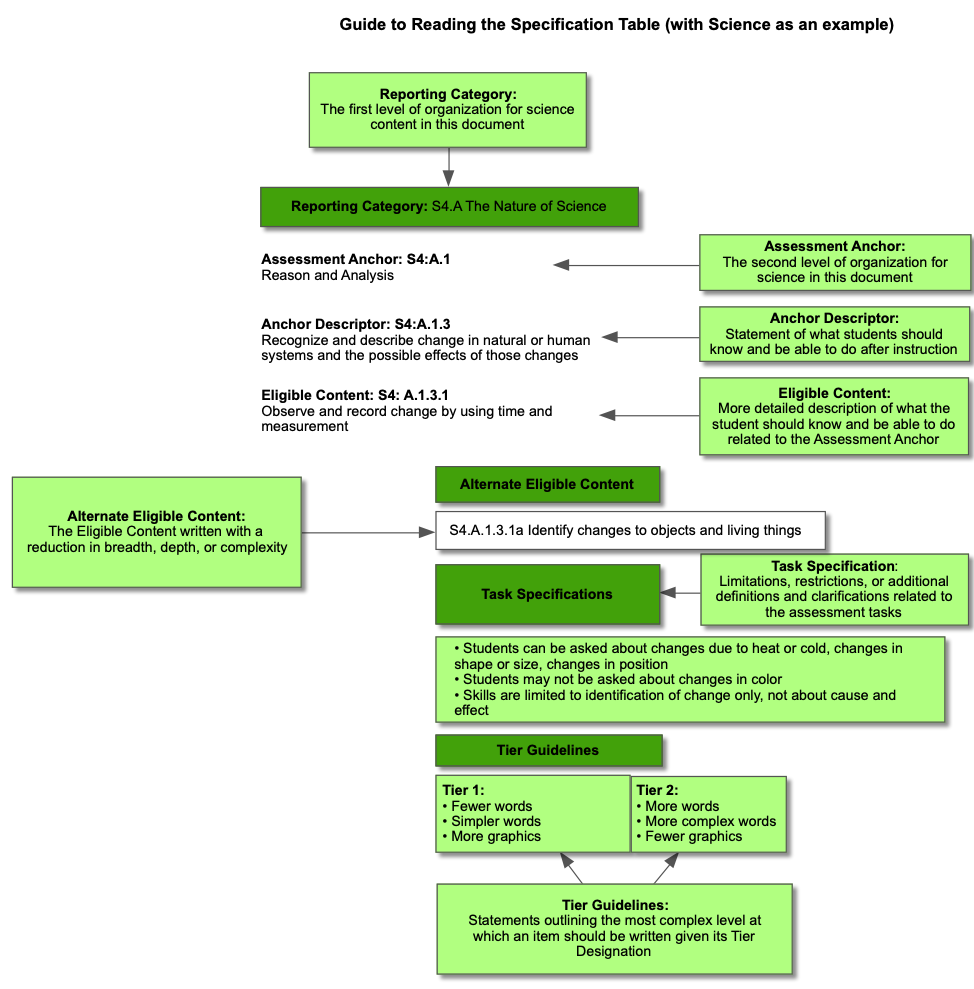

This website houses all the technical documentation for the Pennsylvania Alternate Assessment, 2020. The table below provides a brief overview of the website contents. Following the table is a brief description of the test design and development.
PASA is designed to reflect appropriate adaptations of PA content standards (alternate eligible content – AEC) that allow students to show what they know and can do using scaled performance scores (with anchor items providing comparable forms from year to year). Across various reporting categories, the eligible content is articulated with task specifications that are then applied to two forms: (a) Tier 1 for very low performing students and (b) Tier 2 for higher performing students.

In each of these files, the PASA test specifications are summarized for each subject area, including the purpose of the test, the content depicted, a description of two tiers used for very low performing students (Tier 1) and higher performing students (Tier 2), articulation of four performance categories (emerging, novice, proficient, and advanced), the test format and student response, the scoring system, and finally tables (for each grade) showing the number of items with various AECs.
See Appendix 1.1 (ELA), Appendix 1.2 (Math), and Appendix 1.3 (Science)
Summary of Appendices/Findings: All three tests were consistently designed with a number of key features that addressed alternate eligible content (AECs) reflecting academic standards: (a) accessibility (through tiers of scaffold), (b) sensitivity to a range of performance across proficiency categories, (c) layout and administration, and (d) breadth across all grades (3-9 and 11). Importantly, the tests include a wide range of AECs with items distributed throughout them.
Update of Tier 1 & 2 files for ELA, Math, and Science In fall 2019, PASA items were modified by removing extra (secondary and tertiary) prompts. As well, the language of the prompts themselves was revised to better distinguish the two tiers.
See Appendix 1.4 (ELA), Appendix 1.5 (Math), and Appendix 1.6 (Science)
Summary of Appendices/Findings. Perhaps the most important feature of the PASA is its application to a wide range of skills in the population (students with the most severe cognitive disabilities). Using a two tier approach, students should have access to appropriate items, given their communication skills and use of language. These tiers generally vary in the number of words, complexity of words, and use of graphics. In 2019, the tests across both tiers were revised to better reflect the consistency across the tiers and deploy a single follow-up prompt with a dichotomous score (0 for incorrect and 1 for correct).